Data Understanding#
Korelasi antara sepal_width dan sepal_length#
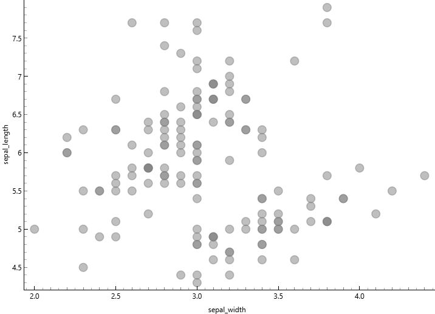
Dari gambar di atas menunjukkan korelasi antara sepal_widh dan sepal_length sangat lemah atau tidak ada korelasi, dikarenakan Titik-titik data tersebar tanpa membentuk pola yang jelas, menunjukkan bahwa tidak ada hubungan yang kuat antara sepal length dan sepal width. artinya Kedua variabel ini dapat dianggap sebagai fitur yang berdiri sendiri dan tidak saling mempengaruhi secara linear.
Korelasi antara petal_width dan petal_length#
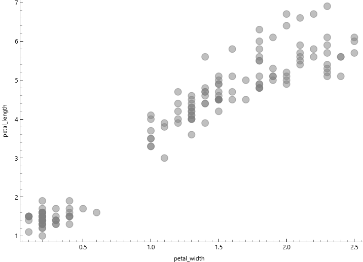
dari gambar di atas menunjukkan korelasi antara petal_width dan petal_length sangat kuat, dikarenakan Titik-titik data membentuk pola yang jelas dari kiri bawah ke kanan atas, menunjukkan bahwa semakin besar nilai petal_length, semakin besar pula nilai petal_width. artinya kedua variabel sangat rapat membentuk pola linear yang jelas. namun terdapat Dua cluster yang terpisah kemungkinan besar merepresentasikan iris yang berbeda, tetapi tidak menyebabkan ambigu.
Korelasi antara sepal_length dan petal_length#
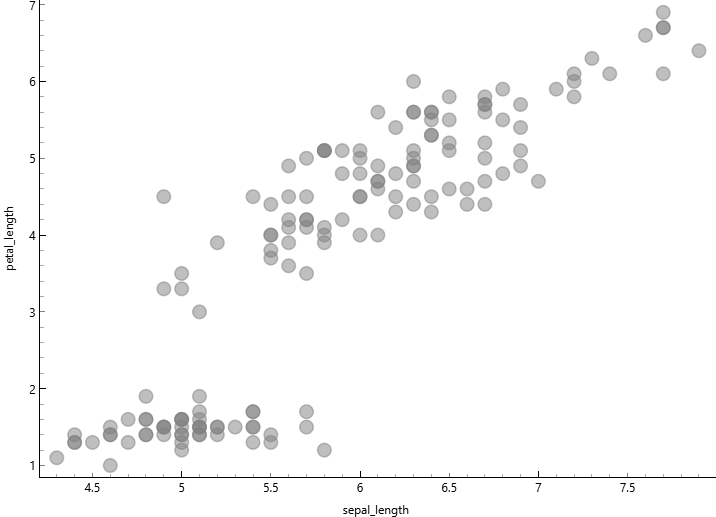
Dari gambar di atas menunjukkan korelasi antara sepal_length dan petal_length sangat kuat, dikarenakan titik-titik data membentuk pola yang jelas dari kiri bawah ke kanan atas, menunjukkan bahwa semakin besar nilai sepal_length, semakin besar pula nilai petal_length. Artinya kedua variabel sangat rapat membentuk pola linear yang jelas. Namun terdapat dua cluster yang terpisah kemungkinan besar merepresentasikan iris yang berbeda, tetapi tidak menyebabkan ambigu.
Korelasi antara sepal_length dan petal_width#
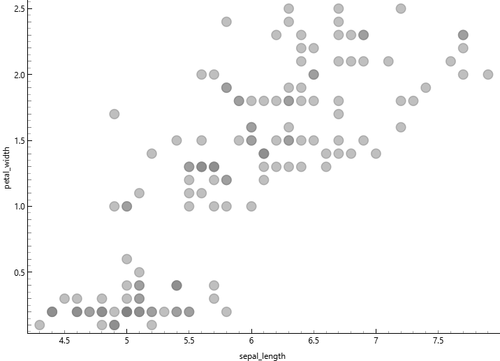
Dari gambar di atas menunjukkan korelasi antara sepal_length dan petal_width sangat kuat, dikarenakan titik-titik data membentuk pola yang jelas dari kiri bawah ke kanan atas, menunjukkan bahwa semakin besar nilai sepal_length, semakin besar pula nilai petal_width. Artinya kedua variabel sangat rapat membentuk pola linear yang jelas. Namun terdapat dua cluster yang terpisah kemungkinan besar merepresentasikan iris yang berbeda, tetapi tidak menyebabkan ambigu.
Korelasi antara sepal_width dan petal_length#
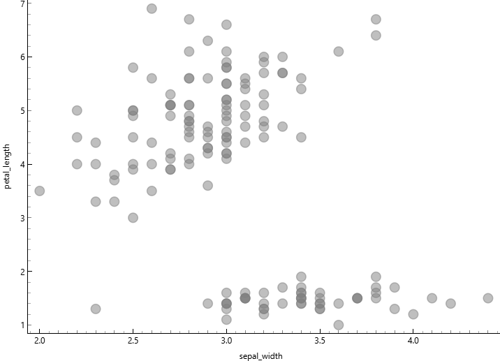
Dari gambar di atas menunjukkan korelasi antara sepal_width dan petal_length cenderung lemah, dikarenakan titik-titik data tidak membentuk pola linear yang konsisten dari kiri bawah ke kanan atas. Terlihat adanya dua cluster yang sangat terpisah secara vertikal, di mana cluster bawah memiliki petal_length rendah dan cluster atas memiliki petal_length tinggi, namun dalam masing-masing cluster tidak ada hubungan yang jelas dengan sepal_width. Artinya kedua variabel tidak menunjukkan pola yang rapat dan penyebaran data relatif acak. Dua cluster yang terpisah ini kemungkinan besar merepresentasikan spesies iris yang berbeda dengan karakteristik yang sangat berbeda, dan pemisahan yang sangat jelas ini tidak menyebabkan ambigu.
Korelasi antara sepal_width dan petal_width#
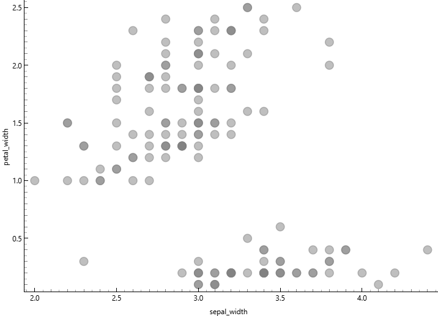
Dari gambar di atas menunjukkan korelasi antara sepal_width dan petal_width lemah atau tidak konsisten, dikarenakan titik-titik data tidak membentuk pola linear yang jelas dari kiri bawah ke kanan atas. Terlihat adanya dua cluster yang sangat terpisah secara vertikal, di mana cluster bawah memiliki petal_width sangat rendah dan cluster atas memiliki petal_width lebih tinggi, namun dalam masing-masing cluster penyebaran data relatif acak tanpa menunjukkan hubungan yang kuat dengan sepal_width. Artinya kedua variabel tidak membentuk pola linear yang rapat dan peningkatan sepal_width tidak diikuti oleh peningkatan petal_width secara konsisten. Dua cluster yang terpisah ini kemungkinan besar merepresentasikan spesies iris yang berbeda, dan pemisahan yang sangat jelas ini tidak menyebabkan ambigu.
Statistik dikriptif#
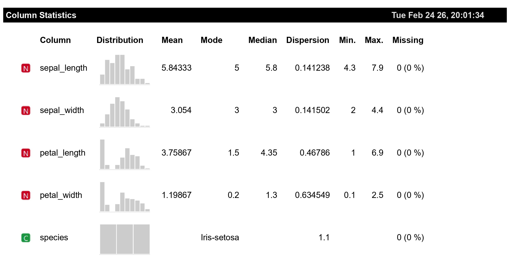
Berdasarkan tabel statistik deskriptif di atas, dataset Iris menunjukkan karakteristik yang menarik untuk setiap variabel pengukuran. Pada sepal_length, nilai rata-rata sebesar 5.84 cm sangat dekat dengan median 5.8 cm, mengindikasikan distribusi data yang relatif simetris dan terkonsentrasi di kisaran 5-6 cm dengan variasi yang kecil. Sementara itu, sepal_width memiliki mean 3.05 cm dengan median dan mode sama-sama bernilai 3 cm, menunjukkan bahwa lebar sepal cenderung homogen antar spesies dengan penyebaran data yang rapat. Berbeda dengan pengukuran sepal, variabel petal_length dan petal_width menunjukkan pola yang lebih kompleks. Nilai mode pada petal_length (1.5 cm) dan petal_width (0.2 cm) sangat berbeda dengan median masing-masing (4.35 cm dan 1.3 cm), yang mengindikasikan adanya distribusi bimodal atau dua kelompok data yang terpisah jelas. Hal ini diperkuat oleh nilai dispersi yang lebih tinggi pada petal_width (0.63) dibandingkan variabel lainnya, menunjukkan bahwa pengukuran petal memiliki variabilitas yang lebih besar dan lebih efektif untuk membedakan antar spesies.
Google Collab#
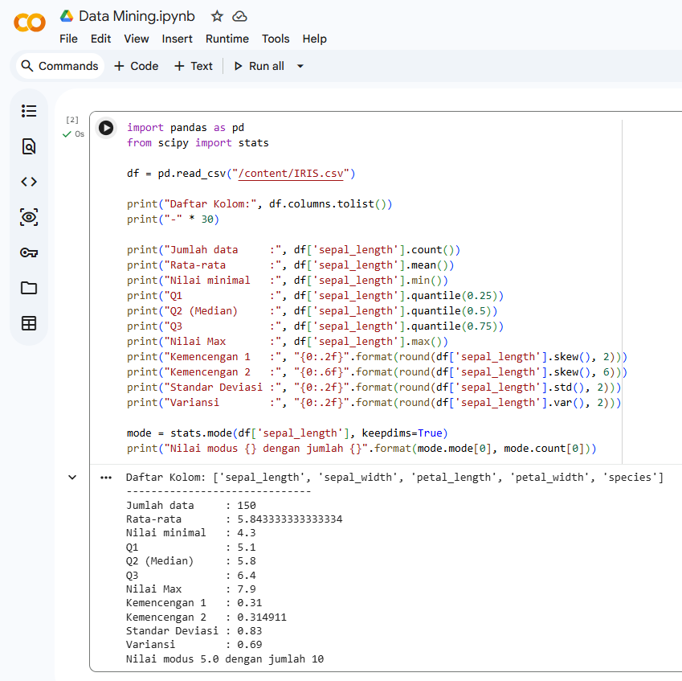
https://colab.research.google.com/drive/1oBRw-sXud9UBPtUMbNaHNfiLkg3Ivz17?usp=sharing
Analisis dilakukan pada variabel sepal_length dari dataset Iris dengan jumlah data sebanyak 150 observasi.Nilai rata-rata sebesar 5,84 dan median sebesar 5,8 menunjukkan bahwa distribusi data cukup seimbang, karena kedua nilai tersebut hampir sama. Nilai minimum adalah 4,3 dan maksimum 7,9, sehingga rentang data tergolong cukup luas.Kuartil pertama (Q1) sebesar 5,1 dan kuartil ketiga (Q3) sebesar 6,4 menunjukkan bahwa sebagian besar data berada dalam interval tersebut. Standar deviasi sebesar 0,83 menandakan bahwa penyebaran data tidak terlalu besar dan masih relatif stabil.Nilai skewness sebesar 0,31 menunjukkan distribusi sedikit condong ke kanan, tetapi tidak signifikan. Modus sebesar 5,0 dengan frekuensi 10 kali menunjukkan bahwa nilai tersebut paling sering muncul.Secara keseluruhan, distribusi panjang sepal cenderung stabil, relatif simetris, dan tidak menunjukkan adanya penyimpangan ekstrem yang berarti.
Kode#
import pandas as pd
from scipy import stats
df = pd.read_csv("/content/IRIS.csv")
print("Daftar Kolom:", df.columns.tolist())
print("-" * 30)
print("Jumlah data :", df['sepal_length'].count())
print("Rata-rata :", df['sepal_length'].mean())
print("Nilai minimal :", df['sepal_length'].min())
print("Q1 :", df['sepal_length'].quantile(0.25))
print("Q2 (Median) :", df['sepal_length'].quantile(0.5))
print("Q3 :", df['sepal_length'].quantile(0.75))
print("Nilai Max :", df['sepal_length'].max())
print("Kemencengan 1 :", "{0:.2f}".format(round(df['sepal_length'].skew(), 2)))
print("Kemencengan 2 :", "{0:.6f}".format(round(df['sepal_length'].skew(), 6)))
print("Standar Deviasi :", "{0:.2f}".format(round(df['sepal_length'].std(), 2)))
print("Variansi :", "{0:.2f}".format(round(df['sepal_length'].var(), 2)))
mode = stats.mode(df['sepal_length'], keepdims=True)
print("Nilai modus {} dengan jumlah {}".format(mode.mode[0], mode.count[0]))
Output#
Daftar Kolom: ['sepal_length', 'sepal_width', 'petal_length', 'petal_width', 'species']
------------------------------
Jumlah data : 150
Rata-rata : 5.843333333333334
Nilai minimal : 4.3
Q1 : 5.1
Q2 (Median) : 5.8
Q3 : 6.4
Nilai Max : 7.9
Kemencengan 1 : 0.31
Kemencengan 2 : 0.314911
Standar Deviasi : 0.83
Variansi : 0.69
Nilai modus 5.0 dengan jumlah 10
Revisi#
Google Collab#
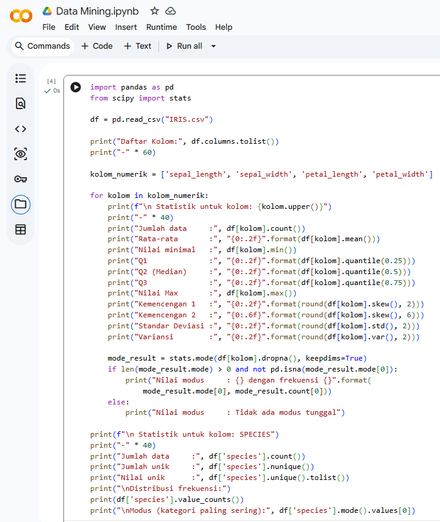
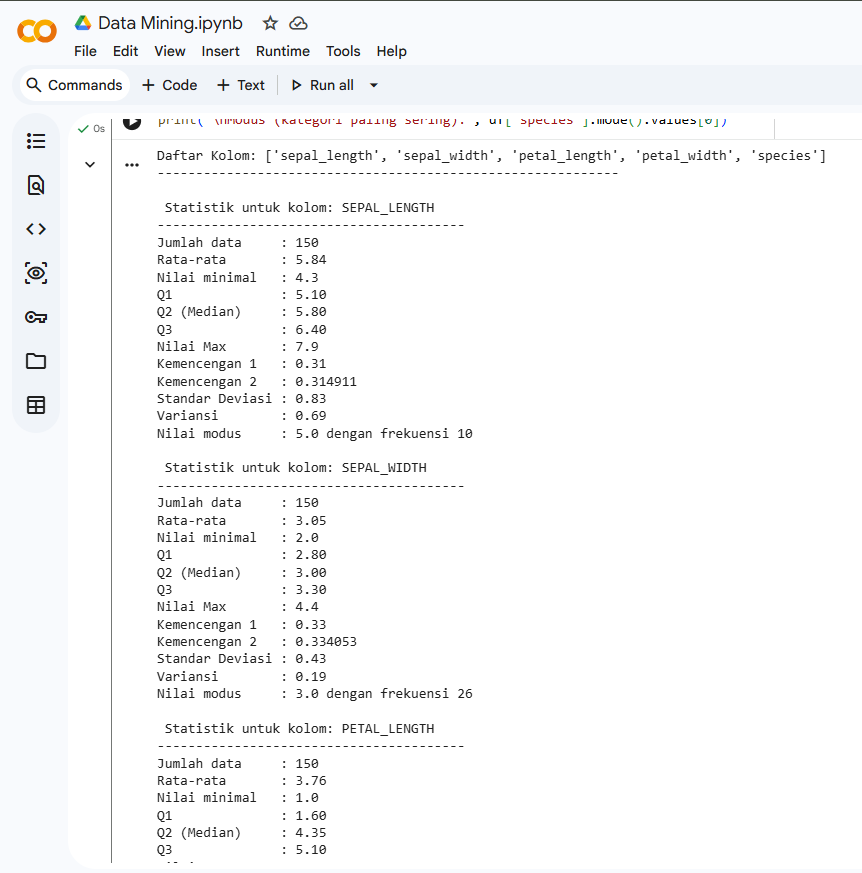
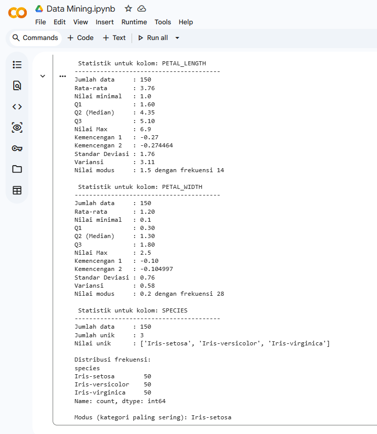
Link#
https://colab.research.google.com/drive/1oBRw-sXud9UBPtUMbNaHNfiLkg3Ivz17?usp=sharing
Kode Lengkap#
import pandas as pd
from scipy import stats
df = pd.read_csv("IRIS.csv")
print("Daftar Kolom:", df.columns.tolist())
print("-" * 60)
kolom_numerik = ['sepal_length', 'sepal_width', 'petal_length', 'petal_width']
for kolom in kolom_numerik:
print(f"\n Statistik untuk kolom: {kolom.upper()}")
print("-" * 40)
print("Jumlah data :", df[kolom].count())
print("Rata-rata :", "{0:.2f}".format(df[kolom].mean()))
print("Nilai minimal :", df[kolom].min())
print("Q1 :", "{0:.2f}".format(df[kolom].quantile(0.25)))
print("Q2 (Median) :", "{0:.2f}".format(df[kolom].quantile(0.5)))
print("Q3 :", "{0:.2f}".format(df[kolom].quantile(0.75)))
print("Nilai Max :", df[kolom].max())
print("Kemencengan 1 :", "{0:.2f}".format(round(df[kolom].skew(), 2)))
print("Kemencengan 2 :", "{0:.6f}".format(round(df[kolom].skew(), 6)))
print("Standar Deviasi :", "{0:.2f}".format(round(df[kolom].std(), 2)))
print("Variansi :", "{0:.2f}".format(round(df[kolom].var(), 2)))
mode_result = stats.mode(df[kolom].dropna(), keepdims=True)
if len(mode_result.mode) > 0 and not pd.isna(mode_result.mode[0]):
print("Nilai modus : {} dengan frekuensi {}".format(
mode_result.mode[0], mode_result.count[0]))
else:
print("Nilai modus : Tidak ada modus tunggal")
print(f"\n Statistik untuk kolom: SPECIES")
print("-" * 40)
print("Jumlah data :", df['species'].count())
print("Jumlah unik :", df['species'].nunique())
print("Nilai unik :", df['species'].unique().tolist())
print("\nDistribusi frekuensi:")
print(df['species'].value_counts())
print("\nModus (kategori paling sering):", df['species'].mode().values[0])
Output#
Daftar Kolom: ['sepal_length', 'sepal_width', 'petal_length', 'petal_width', 'species']
------------------------------------------------------------
Statistik untuk kolom: SEPAL_LENGTH
----------------------------------------
Jumlah data : 150
Rata-rata : 5.84
Nilai minimal : 4.3
Q1 : 5.10
Q2 (Median) : 5.80
Q3 : 6.40
Nilai Max : 7.9
Kemencengan 1 : 0.31
Kemencengan 2 : 0.314911
Standar Deviasi : 0.83
Variansi : 0.69
Nilai modus : 5.0 dengan frekuensi 10
Statistik untuk kolom: SEPAL_WIDTH
----------------------------------------
Jumlah data : 150
Rata-rata : 3.05
Nilai minimal : 2.0
Q1 : 2.80
Q2 (Median) : 3.00
Q3 : 3.30
Nilai Max : 4.4
Kemencengan 1 : 0.33
Kemencengan 2 : 0.334053
Standar Deviasi : 0.43
Variansi : 0.19
Nilai modus : 3.0 dengan frekuensi 26
Statistik untuk kolom: PETAL_LENGTH
----------------------------------------
Jumlah data : 150
Rata-rata : 3.76
Nilai minimal : 1.0
Q1 : 1.60
Q2 (Median) : 4.35
Q3 : 5.10
Nilai Max : 6.9
Kemencengan 1 : -0.27
Kemencengan 2 : -0.274464
Standar Deviasi : 1.76
Variansi : 3.11
Nilai modus : 1.5 dengan frekuensi 14
Statistik untuk kolom: PETAL_WIDTH
----------------------------------------
Jumlah data : 150
Rata-rata : 1.20
Nilai minimal : 0.1
Q1 : 0.30
Q2 (Median) : 1.30
Q3 : 1.80
Nilai Max : 2.5
Kemencengan 1 : -0.10
Kemencengan 2 : -0.104997
Standar Deviasi : 0.76
Variansi : 0.58
Nilai modus : 0.2 dengan frekuensi 28
Statistik untuk kolom: SPECIES
----------------------------------------
Jumlah data : 150
Jumlah unik : 3
Nilai unik : ['Iris-setosa', 'Iris-versicolor', 'Iris-virginica']
Distribusi frekuensi:
species
Iris-setosa 50
Iris-versicolor 50
Iris-virginica 50
Name: count, dtype: int64
Modus (kategori paling sering): Iris-setosa
Penjelasan Mengukur Jarak dengan Tipe Data Campuran#
Latar Belakang#
Dalam praktik nyata, database yang digunakan untuk analisis data sering kali tidak hanya mengandung satu jenis tipe data saja, melainkan berbagai tipe data yang tercampur menjadi satu kesatuan. Sebagai contoh, sebuah dataset dapat memuat atribut nominal seperti warna atau jenis produk, atribut binary simetris seperti jenis kelamin, atribut binary asimetris seperti hasil tes medis yang bernilai Y/N, atribut numerik berupa data interval atau rasio seperti suhu atau pendapatan, serta atribut ordinal yang memiliki tingkatan atau peringkat seperti level kepuasan atau tingkat pendidikan. Karena setiap tipe data tersebut memiliki karakteristik dan cara pengukuran yang berbeda-beda, kita tidak dapat menerapkan satu rumus jarak secara langsung untuk menghitung kemiripan atau perbedaan antar objek. Sebagai solusi, pendekatan yang dapat digunakan adalah metode pembobotan, yaitu dengan menghitung jarak untuk setiap atribut secara terpisah sesuai dengan tipe datanya, kemudian menggabungkan seluruh hasil perhitungan tersebut menggunakan rumus jarak campuran yang memperhitungkan indikator validitas setiap atribut. Dengan pendekatan ini, seluruh jenis atribut dapat berkontribusi secara proporsional dalam perhitungan jarak akhir, sehingga hasil analisis menjadi lebih akurat dan mencerminkan karakteristik data yang sebenarnya.
Rumus Mengukur Jarak Data Campuran#
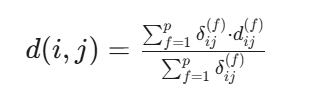
Keterangan:
Simbol |
Penjelasan |
|---|---|
\(d(i,j)\) |
Jarak antara objek i dan j |
\(p\) |
Jumlah total atribut |
\(\delta_{ij}^{(f)}\) |
Indikator keberadaan atribut ke-f pada objek i dan j |
\(d_{ij}^{(f)}\) |
Jarak atribut ke-f antara objek i dan j |
|
Cara Menghitung \(d_{ij}^{(f)}\) per Tipe Atribut#
1. Atribut Nominal atau Binary#
\(d_{ij}^{(f)} = 0\), jika \(x_{if} = x_{jf}\) (nilai sama)
\(d_{ij}^{(f)} = 1\), jika \(x_{if} \ne x_{jf}\) (nilai berbeda)
Cara penghitungannya menggunakan metode simple matching.
2. Atribut Numerik#
Lakukan normalisasi terlebih dahulu agar skala seragam, misalnya dengan:
Z-score:
\(z_{if} = \frac{x_{if} - \mu_f}{\sigma_f}\)
Mean Absolute Deviation: lebih robust terhadap outlier.
Setelah dinormalisasi, hitung jarak dengan metode numerik (Euclidean, Manhattan, dll).
3. Atribut Ordinal#
Langkah-langkah:
Ganti nilai dengan ranking \(r_{if}\) (misal: rendah = 1, sedang = 2, tinggi = 3)
Normalisasi ke rentang [0,1]:
di mana \(M_f\) = jumlah tingkat/kategori pada atribut ke-f
Hitung jarak menggunakan metode numerik pada nilai \(z_{if}\).
Analisis Menggunakan Orange Data Mining untuk Data yg Campuran#
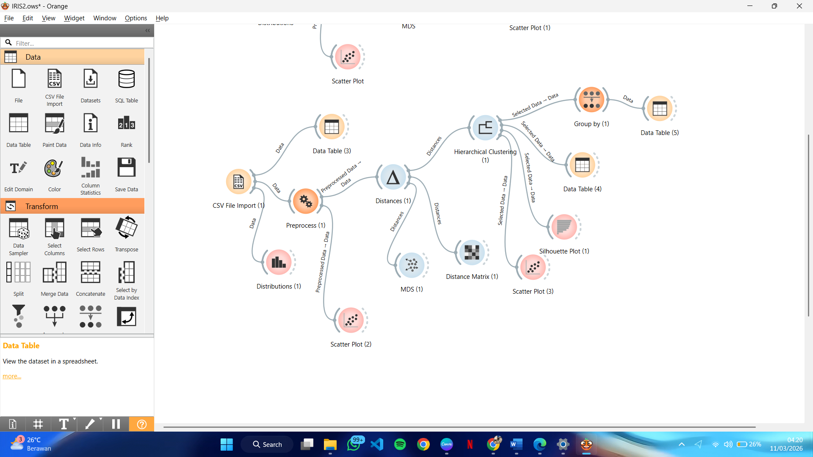
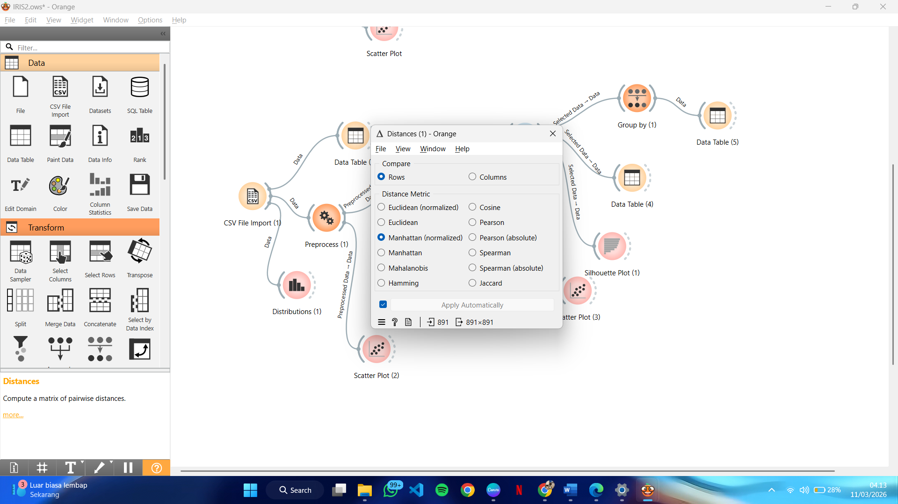
Widget Distances dipakai untuk menghasilkan matriks dissimilarity, yaitu matriks yang berisi nilai jarak antar setiap pasangan objek dalam dataset. Pada pengaturan Compare, opsi yang dipilih adalah Rows, sehingga perhitungan dilakukan antar baris data (antar objek), bukan antar kolom atau atribut. Pengaturan ini sesuai dengan tujuan analisis klaster dan visualisasi jarak, di mana matriks yang terbentuk merepresentasikan kedekatan atau perbedaan antar n data point.Metode jarak yang digunakan adalah Manhattan (normalized). Pemilihan metrik ini dilakukan karena dataset yang digunakan mengandung atribut dengan skala berbeda, sehingga diperlukan normalisasi agar setiap atribut memiliki kontribusi yang seimbang terhadap perhitungan jarak. Manhattan dipilih karena lebih stabil terhadap perbedaan skala dan tidak terlalu sensitif terhadap nilai ekstrem dibandingkan Euclidean dalam konteks data campuran.
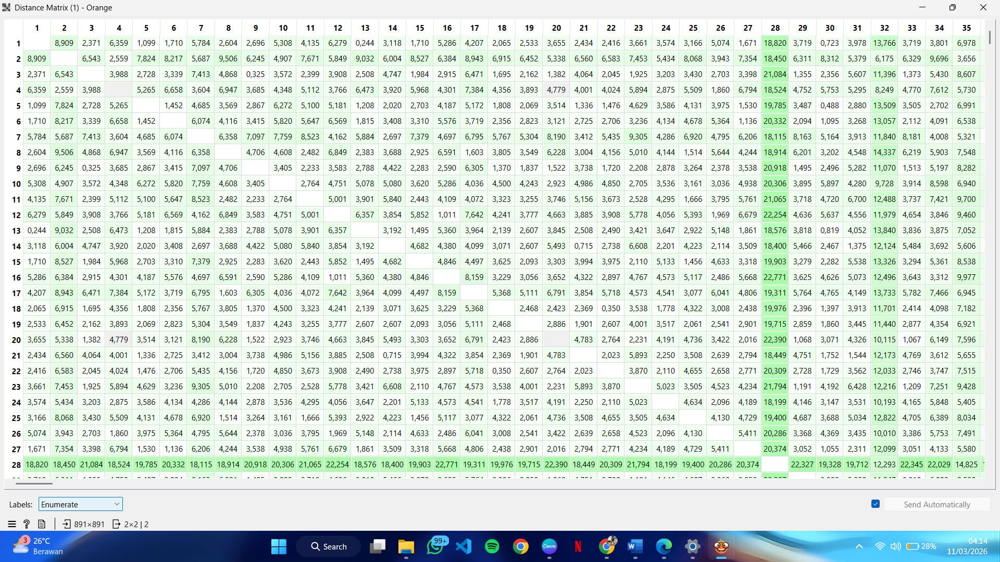
Gambar tersebut memperlihatkan Distance Matrix yang dihasilkan dari widget Distance Matrix pada Orange Data Mining. Matriks ini merepresentasikan nilai dissimilarity atau jarak antar setiap pasangan objek dalam dataset. Bentuknya simetris, sehingga jarak antara objek i dan j sama dengan jarak antara objek j dan i, atau \(d(i,j) = d(j,i)\). Elemen pada diagonal utama bernilai nol karena setiap objek memiliki jarak nol terhadap dirinya sendiri.Setiap nilai dalam matriks menunjukkan tingkat perbedaan numerik antar dua objek. Semakin kecil nilainya, semakin tinggi tingkat kemiripan antar objek tersebut. Sebaliknya, semakin besar nilainya, semakin besar pula perbedaan karakteristik di antara keduanya.
Sebagai ilustrasi, jarak antara customer 7590-VHVEG dan 5575-GNVDE sebesar 2,074 menunjukkan tingkat perbedaan yang cukup moderat. Sementara itu, jarak antara 7590-VHVEG dan 3668-QPYBK sebesar 0,554 menunjukkan bahwa kedua customer tersebut memiliki karakteristik yang relatif mirip. Perbedaan yang jauh lebih signifikan terlihat pada pasangan 8091-TTVAX dan 3668-QPYBK dengan nilai jarak sebesar 4,519, yang menunjukkan bahwa keduanya sangat berbeda secara karakteristik.
Secara matematis, matriks ini memenuhi sifat dasar fungsi jarak, yaitu bernilai non-negatif untuk objek yang berbeda, bersifat simetris (\(d(i,j) = d(j,i)\)), serta memenuhi prinsip ketaksamaan segitiga. Matriks dissimilarity ini kemudian digunakan sebagai dasar dalam proses Hierarchical Clustering untuk mengelompokkan pelanggan berdasarkan tingkat kemiripan karakteristiknya.
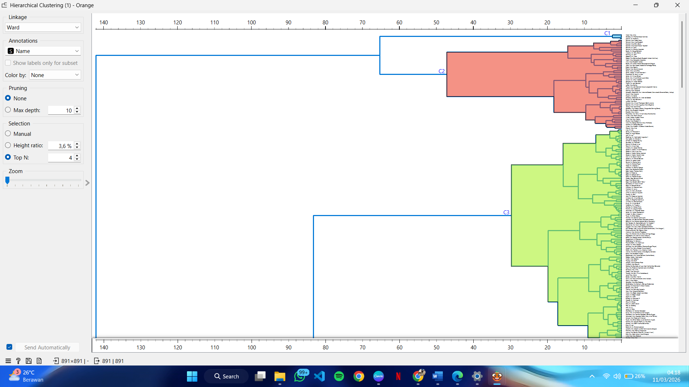
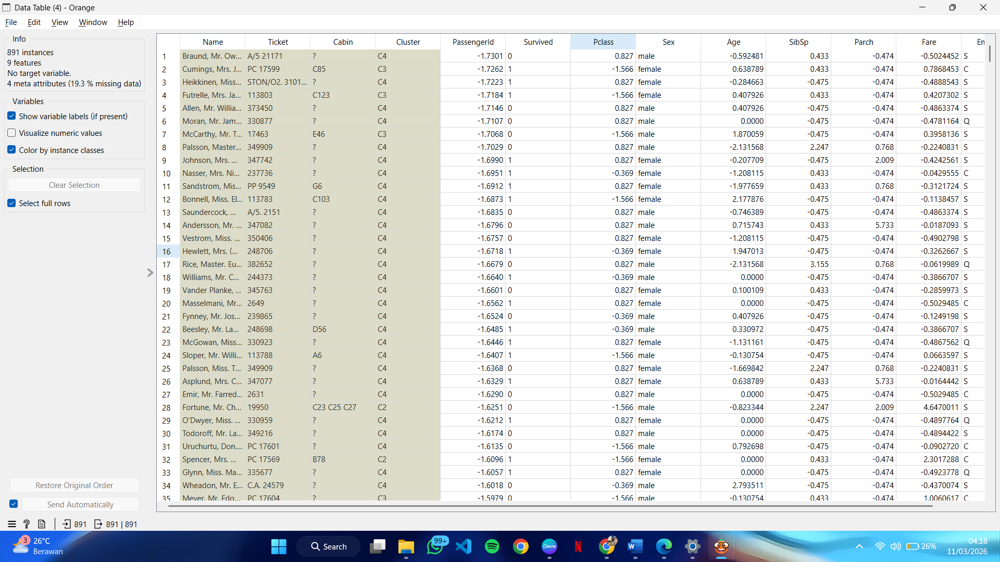
Berdasarkan hasil dendrogram, proses hierarchical clustering dilakukan menggunakan metode linkage Ward dan menghasilkan 4 cluster yang dianggap optimal. Pemotongan dendrogram dilakukan pada ketinggian tertentu sehingga terbentuk empat kelompok data sebagai berikut:Cluster 1 terdiri dari 3 data.
Cluster 2 terdiri dari 50 data.
Cluster 3 terdiri dari 125 data.
Cluster 4 terdiri dari 713 data.
Metode Ward linkage dipilih karena bekerja dengan prinsip meminimalkan peningkatan varians dalam cluster (within-cluster variance) pada setiap tahap penggabungan. Dengan pendekatan ini, cluster yang terbentuk cenderung lebih kompak dan homogen dibandingkan metode linkage lainnya.
Distribusi anggota cluster menunjukkan bahwa dua cluster utama (C1 dan C2) memiliki jumlah anggota yang sama besar, sedangkan C3 dan C4 memiliki jumlah yang lebih kecil. Hal ini mengindikasikan adanya dua kelompok data yang dominan serta dua kelompok yang lebih spesifik berdasarkan kemiripan karakteristik atribut numerik yang digunakan dalam perhitungan jarak.
Hasil pengelompokan ini selanjutnya dapat dianalisis lebih lanjut melalui visualisasi seperti Scatter Plot, MDS, maupun evaluasi menggunakan Silhouette Plot untuk melihat kualitas pemisahan antar cluster.
Implementasikan Data Iris untuk Mengukur Jarak di Orange#
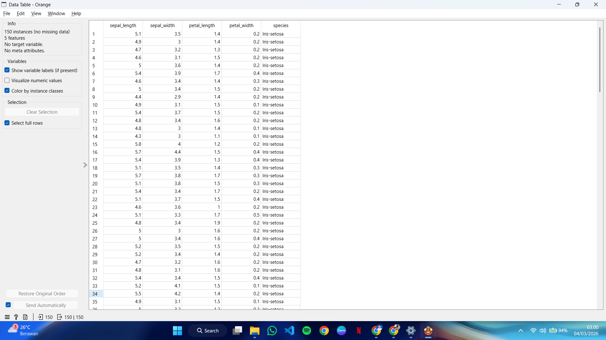
Gambar di atas merupakan sebagian data mentah dari dataset Iris yang digunakan untuk diimplementasikan dalam proses perhitungan jarak pada Orange Data Mining. Dataset ini terdiri dari empat atribut numerik, yaitu sepal_length, sepal_width, petal_length, dan petal_width, serta satu atribut kategorikal yaitu species.
Selanjutnya dilakukan proses perhitungan jarak antar objek sehingga dihasilkan matriks dissimilarity sebagai berikut:
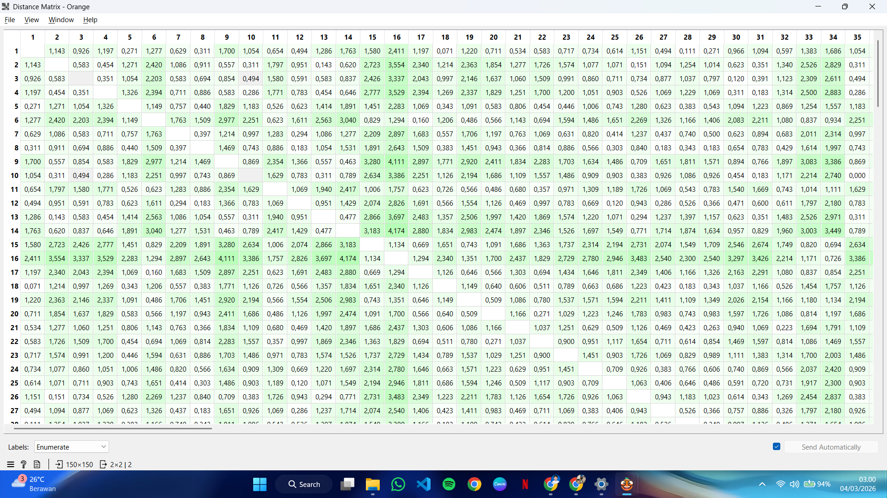
Matriks tersebut menampilkan nilai jarak antar setiap pasangan data dalam dataset. Nilai yang lebih kecil menunjukkan tingkat kemiripan yang lebih tinggi antar objek, sedangkan nilai yang lebih besar menunjukkan perbedaan karakteristik yang semakin signifikan.
Gambar di atas menunjukkan alur implementasi pengukuran jarak dan proses clustering pada dataset Iris menggunakan Orange Data Mining. Proses dimulai dari widget CSV File Import untuk memuat dataset, kemudian dilanjutkan ke tahap Preprocess guna melakukan normalisasi dan penyesuaian atribut sebelum perhitungan jarak.
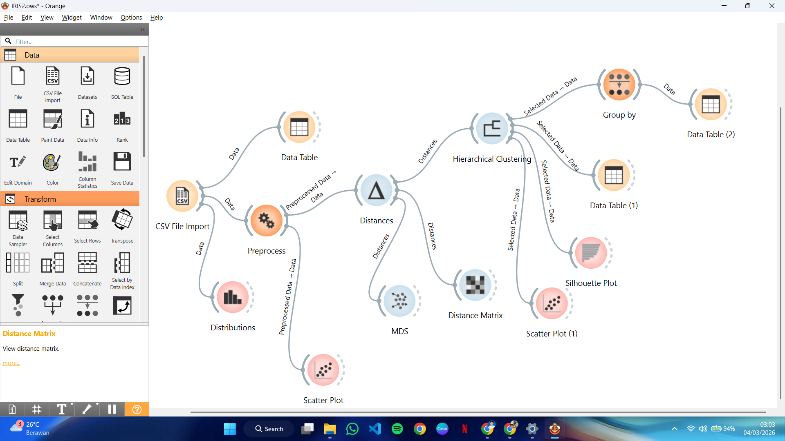
Selanjutnya, widget Distances digunakan untuk menghitung matriks dissimilarity antar objek berdasarkan metrik jarak yang telah ditentukan. Hasil perhitungan ini kemudian divisualisasikan melalui Distance Matrix untuk melihat nilai jarak antar setiap pasangan data.Matriks jarak tersebut menjadi dasar dalam proses Hierarchical Clustering, yang bertujuan mengelompokkan data berdasarkan tingkat kemiripan karakteristiknya. Hasil clustering kemudian dianalisis lebih lanjut menggunakan beberapa visualisasi, seperti Dendrogram, MDS (Multidimensional Scaling) untuk proyeksi dua dimensi, Scatter Plot, serta Silhouette Plot untuk mengevaluasi kualitas cluster.
Untuk mengetahui distribusi jumlah anggota setiap cluster, output dari Hierarchical Clustering disalurkan ke widget Group By, yang kemudian ditampilkan dalam Data Table sebagai ringkasan jumlah data pada masing-masing cluster.
Alur ini menunjukkan tahapan lengkap mulai dari impor data, perhitungan jarak, pembentukan cluster, hingga evaluasi dan interpretasi hasil clustering.
Mengukur Jarak/Similaritas Data#
Normalisasi data#
Normalisasi data adalah teknik pra-pemrosesan yang sangat penting dalam data mining dan machine learning. Tujuannya adalah menyamakan skala seluruh variabel/fitur agar tidak ada satu atribut pun yang mendominasi atribut lain hanya karena memiliki rentang angka yang lebih besar (misalnya, membandingkan atribut “gaji” dalam jutaan dengan “umur” dalam puluhan).
Misal kita punya array data: X = [10, 20, 30, 40, 50]
Berikut adalah macam-macam teknik normalisasi data yang paling sering digunakan:
1. Min-Max Normalization#
Metode ini digunakan untuk menyesuaikan nilai data agar berada dalam rentang tertentu, biasanya 0 sampai 1 (atau -1 sampai 1). Teknik ini sering dipakai pada algoritma yang menghitung jarak antar data, misalnya pada K-Means clustering.
Kelebihan: Hubungan antar nilai data tetap terjaga.
Kelemahan: Mudah terpengaruh oleh outlier (nilai yang terlalu jauh dari data lain).
Rumus:
Contoh#
Mengubah nilai data agar berada pada rentang 0 sampai 1.
Rumus:
Data: \(X = [10, 20, 30, 40, 50]\)
Nilai minimum dan maksimum: \(X_{min} = 10\), \(X_{max} = 50\)
Contoh hitung (nilai 30):
Hasil normalisasi:
[0.0, 0.25, 0.5, 0.75, 1.0]
Min-Max New (Custom Range)#
Min-Max juga bisa digunakan untuk mengubah data ke rentang baru yang kita tentukan sendiri, misalnya 0–10, -1–1, atau rentang lainnya.
Rumus:
Contoh#
Misalnya data ingin diubah ke rentang 0 sampai 10.
Data: \(X = [10, 20, 30, 40, 50]\)
Nilai awal: \(X_{min} = 10\), \(X_{max} = 50\)
Rentang baru: \(New_{min} = 0\), \(New_{max} = 10\)
Contoh hitung (nilai 30):
2. Z-Score Normalization#
Teknik ini mengubah data sehingga nilai rata-rata (mean) menjadi 0 dan standar deviasi menjadi 1. Metode ini sering digunakan ketika data memiliki skala yang berbeda atau terdapat outlier.
Kelebihan: Lebih tahan terhadap outlier dibanding Min-Max karena mempertimbangkan penyebaran data.
Kelemahan: Hasil normalisasi tidak memiliki batas rentang tetap seperti 0 sampai 1.
Rumus:
(Keterangan: \(\mu\) adalah rata-rata dan \(\sigma\) adalah standar deviasi).
Contoh#
Tujuan: mengubah data sehingga mean = 0 dan standar deviasi = 1.
Rumus:
Data kita:
[10, 20, 30, 40, 50]Rata-rata (μ):
Rumus standar deviasi:
Langkah perhitungan:
Hitung \((X - \mu)^2\)
\((10 - 30)^2 = 400\)
\((20 - 30)^2 = 100\)
\((30 - 30)^2 = 0\)
\((40 - 30)^2 = 100\)
\((50 - 30)^2 = 400\)
Hitung varians
Hitung standar deviasi
Contoh perhitungan (nilai 40):
Hasil normalisasi seluruh data:
[-1.414, -0.707, 0.0, 0.707, 1.414]
3. Decimal Scaling#
Teknik ini bekerja dengan menggeser titik desimal dari nilai data. Jumlah pergeseran desimal bergantung pada nilai absolut maksimum di dalam atribut tersebut.
Kelebihan: Sederhana dan mudah dihitung.
Rumus:
(Keterangan: \(j\) adalah bilangan bulat terkecil yang membuat nilai mutlak maksimum dari \(x_{norm}\) kurang dari 1).
Contoh :#
Menggeser koma desimal. Pembaginya ditentukan oleh nilai angka terbesar di dataset supaya nilai akhirnya kurang dari 1.
Rumus: $\(X_{norm} = \frac{X}{10^j}\)$
Data kita:
Angka absolut paling besar = 50.
Kita cari nilai \(j\) yang kalau 50 dibagi \(10^j\) hasilnya \(< 1\).
Maka \(j = 2\) (karena \(10^2 = 100\), dan \(50 / 100 = 0.5\)). Semua data akan dibagi 100.
Contoh hitung (untuk nilai 20):
Hasil seluruh data:
[0.1, 0.2, 0.3, 0.4, 0.5]
Implementasi dengan Sklearn dan Fungsi Kustom#
Berikut adalah script Python menggunakan scikit-learn untuk Min-Max, Z-Score, dan Robust, serta satu fungsi manual untuk Decimal Scaling.
import numpy as np
from sklearn.preprocessing import MinMaxScaler, StandardScaler, RobustScaler
# Data asli (sklearn membutuhkan format array 2D, misal kolom ke-bawah)
X = np.array([[10], [20], [30], [40], [50]])
print("Data Asli:\n", X.flatten())
print("-" * 40)
# 1. Min-Max Scaling (Sklearn)
minmax_scaler = MinMaxScaler()
X_minmax = minmax_scaler.fit_transform(X)
print("1. Hasil Min-Max Scaling:\n", X_minmax.flatten())
# 2. Z-Score / Standardization (Sklearn)
standard_scaler = StandardScaler()
X_standard = standard_scaler.fit_transform(X)
print("2. Hasil Z-Score (Standardization):\n", X_standard.flatten())
# 3. Robust Scaling (Sklearn)
robust_scaler = RobustScaler()
X_robust = robust_scaler.fit_transform(X)
print("3. Hasil Robust Scaling:\n", X_robust.flatten())
# 4. Decimal Scaling (Custom Function)
def decimal_scaling(data):
# Cari nilai j (pangkat 10) dari nilai mutlak maksimum
max_abs_val = np.max(np.abs(data))
j = np.ceil(np.log10(max_abs_val))
# Bagi data dengan 10 pangkat j
data_scaled = data / (10**j)
return data_scaled
X_decimal = decimal_scaling(X)
print("4. Hasil Decimal Scaling:\n", X_decimal.flatten())
Tugas - Missing Values#
1. Transkripsi Data#
Tabel Data Asli (Kiri) & Data Normalisasi (Kanan)
No |
IPK Asli |
PO Asli |
JML Asli |
IPK Norm |
PO Norm |
JML Norm |
WKNN |
|
|---|---|---|---|---|---|---|---|---|
1 |
2 |
200000 |
2 |
0 |
0 |
0 |
||
2 |
3 |
300000 |
3 |
0.5 |
0.5 |
1 |
||
3 |
4 |
200000 |
2 |
1 |
0 |
0 |
||
4 |
2 |
200000 |
3 |
0 |
0 |
1 |
||
5 |
3 |
300000 |
2 |
0.5 |
0.5 |
0 |
||
6 |
4 |
400000 |
3 |
1 |
1 |
1 |
||
7 |
2 |
300000 |
? |
0 |
0.5 |
? |
2. Mencari Nilai Tanda Tanya (?) dengan WKNN#
Untuk memprediksi kelas baris ke-7 dengan data yang sudah dinormalisasi (IPK = 0, PO = 0.5), kita harus menghitung jarak Euclidean dari data target ini ke semua data latih (baris 1-6).
Rumus jarak Euclidean:
Perhitungan Jarak Target ke Setiap Baris:
Ke Baris 1 (0, 0): \(d = \sqrt{(0-0)^2 + (0.5-0)^2} = \sqrt{0 + 0.25} = 0.5\) (Kelas JMK: 0)
Ke Baris 2 (0.5, 0.5): \(d = \sqrt{(0.5-0)^2 + (0.5-0.5)^2} = \sqrt{0.25 + 0} = 0.5\) (Kelas JMK: 1)
Ke Baris 3 (1, 0): \(d = \sqrt{(1-0)^2 + (0-0.5)^2} = \sqrt{1 + 0.25} = \sqrt{1.25} \approx 1.118\) (Kelas JMK: 0)
Ke Baris 4 (0, 0): \(d = \sqrt{(0-0)^2 + (0.5-0)^2} = 0.5\) (Kelas JMK: 1)
Ke Baris 5 (0.5, 0.5): \(d = \sqrt{(0.5-0)^2 + (0.5-0.5)^2} = 0.5\) (Kelas JMK: 0)
Ke Baris 6 (1, 1): \(d = \sqrt{(1-0)^2 + (1-0.5)^2} = \sqrt{1 + 0.25} = \sqrt{1.25} \approx 1.118\) (Kelas JMK: 1)
Analisis Hasil (Ada Masalah pada Dataset): Jika Anda perhatikan jarak di atas, terdapat 4 tetangga terdekat yang memiliki jarak persis sama ke data target, yaitu 0.5 (Baris 1, 2, 4, dan 5).
Algoritma WKNN memberikan bobot (weight) berdasarkan kebalikan dari jarak (\(w = 1/d\)). Karena keempat jarak ini sama persis (\(0.5\)), maka bobotnya juga sama persis (\(w = 2\)).
Total bobot untuk Kelas 0 (dari baris 1 & 5) = \(2 + 2 = 4\)
Total bobot untuk Kelas 1 (dari baris 2 & 4) = \(2 + 2 = 4\)
Kesimpulan untuk Nilai ?:
Dataset Excel ini memiliki anomali/kontradiksi (Baris 1 dan 4 datanya sama persis tapi kelasnya beda, begitu juga baris 2 dan 5). Akibatnya, perhitungan WKNN menghasilkan seri (tie) dengan bobot 50:50 antara Kelas 0 dan Kelas 1.
Kode untuk menghitung Missing values#
import math
# 1. Menyiapkan Data Latih (Baris 1 - 6) berdasarkan hasil normalisasi
# Format: [IPK_Norm, PO_Norm, JMK_Norm (Kelas)]
train_data = [
{"baris": 1, "ipk": 0, "po": 0, "kelas": 0},
{"baris": 2, "ipk": 0.5, "po": 0.5, "kelas": 1},
{"baris": 3, "ipk": 1, "po": 0, "kelas": 0},
{"baris": 4, "ipk": 0, "po": 0, "kelas": 1},
{"baris": 5, "ipk": 0.5, "po": 0.5, "kelas": 0},
{"baris": 6, "ipk": 1, "po": 1, "kelas": 1}
]
# 2. Menyiapkan Data Target (Baris 7 yang dicari nilainya)
target_ipk = 0
target_po = 0.5
print("=== PERHITUNGAN JARAK (EUCLIDEAN DISTANCE) ===")
hasil_jarak = []
for data in train_data:
# Rumus Euclidean Distance: akar( (x2 - x1)^2 + (y2 - y1)^2 )
jarak = math.sqrt((data["ipk"] - target_ipk)**2 + (data["po"] - target_po)**2)
hasil_jarak.append({
"baris": data["baris"],
"jarak": jarak,
"kelas": data["kelas"]
})
# Urutkan data dari jarak yang paling dekat ke paling jauh
hasil_jarak_urut = sorted(hasil_jarak, key=lambda x: x["jarak"])
for h in hasil_jarak_urut:
print(f"Ke Baris {h['baris']} -> Jarak = {h['jarak']:.4f} | Kelas (JMK) = {h['kelas']}")
print("\n=== PERHITUNGAN BOBOT (WEIGHT) WKNN ===")
# Misal kita menggunakan K = 4 (karena ada 4 baris yang jaraknya sama-sama terdekat yaitu 0.5)
K = 4
tetangga_terdekat = hasil_jarak_urut[:K]
bobot_kelas_0 = 0.0
bobot_kelas_1 = 0.0
for t in tetangga_terdekat:
# Rumus bobot WKNN: weight = 1 / jarak
bobot = 1 / t["jarak"]
if t["kelas"] == 0:
bobot_kelas_0 += bobot
elif t["kelas"] == 1:
bobot_kelas_1 += bobot
print(f"Baris {t['baris']} (Kelas {t['kelas']}): Bobot = {bobot:.2f}")
print("\n=== HASIL AKHIR WKNN ===")
print(f"Total Bobot Kelas 0 : {bobot_kelas_0:.2f}")
print(f"Total Bobot Kelas 1 : {bobot_kelas_1:.2f}")
if bobot_kelas_0 > bobot_kelas_1:
print("=> Kesimpulan: Baris ke-7 diklasifikasikan sebagai Kelas 0")
elif bobot_kelas_1 > bobot_kelas_0:
print("=> Kesimpulan: Baris ke-7 diklasifikasikan sebagai Kelas 1")
else:
print("=> Kesimpulan: SERI (Tie)! Bobot kelas 0 dan 1 sama kuat karena data latih Baris 1/4 dan 2/5 saling bertentangan nilainya.")
UTS#
Informasi Dataset#
Atribut |
Keterangan |
|---|---|
Jumlah Sampel |
2.000 baris |
Jumlah Fitur |
10 fitur (9 numerik, 1 kategorikal) |
Jumlah Kelas |
2 kelas |
Target / Label |
|
Penjelasan Fitur#
1. pH Tanah#
Satuan: Skala pH (0–14)
Deskripsi: Tingkat keasaman atau kebasaan tanah. pH optimal untuk pertanian berkisar 6,0–7,5.
Nilai Subur: 6,0 – 7,5
Nilai Tidak Subur: 3,5 – 5,4 (asam kuat) atau 7,6 – 9,0 (basa kuat)
2. N Total (%)#
Satuan: Persen (%)
Deskripsi: Kandungan nitrogen total dalam tanah. Nitrogen sangat penting untuk pertumbuhan vegetatif tanaman.
Nilai Subur: 0,21 – 0,50%
Nilai Tidak Subur: 0,01 – 0,20%
3. P Tersedia (ppm)#
Satuan: Parts per million (ppm)
Deskripsi: Fosfor tersedia yang dapat diserap tanaman. Fosfor berperan dalam pembentukan akar dan buah.
Nilai Subur: 15 – 60 ppm
Nilai Tidak Subur: 1 – 14 ppm
4. K Tersedia (meq/100g)#
Satuan: Milliequivalent per 100 gram tanah
Deskripsi: Kalium tersedia dalam tanah. Penting untuk ketahanan tanaman dan proses fotosintesis.
Nilai Subur: 0,30 – 0,80 meq/100g
Nilai Tidak Subur: 0,05 – 0,29 meq/100g
5. C Organik (%)#
Satuan: Persen (%)
Deskripsi: Kandungan karbon organik tanah, indikator utama kesuburan dan kesehatan biologi tanah.
Nilai Subur: 2,0 – 5,0%
Nilai Tidak Subur: 0,2 – 1,9%
6. KTK (meq/100g)#
Satuan: Milliequivalent per 100 gram tanah
Deskripsi: Kapasitas Tukar Kation — kemampuan tanah mengikat dan menyediakan unsur hara bagi tanaman. Semakin tinggi semakin subur.
Nilai Subur: 20 – 45 meq/100g
Nilai Tidak Subur: 5 – 19 meq/100g
7. Kejenuhan Basa (%)#
Satuan: Persen (%)
Deskripsi: Persentase kation basa (Ca, Mg, K, Na) dari total KTK. Menggambarkan kualitas kesuburan kimia tanah.
Nilai Subur: 60 – 100%
Nilai Tidak Subur: 10 – 59%
8. Tekstur Tanah#
Tipe: Kategorikal
Deskripsi: Komposisi partikel tanah yang memengaruhi drainase, aerasi, dan kemampuan menahan air.
Kelas |
Tekstur yang Umum |
|---|---|
Subur |
Lempung, Lempung Berpasir, Lempung Berliat |
Tidak Subur |
Pasir, Liat, Debu |
9. Kadar Air (%)#
Satuan: Persen (%)
Deskripsi: Persentase kadar air dalam tanah. Terlalu kering atau terlalu basah sama-sama merugikan pertumbuhan tanaman.
Nilai Subur: 25 – 45%
Nilai Tidak Subur: 5 – 20% (terlalu kering) atau 55 – 75% (terlalu basah)
10. Bulk Density (g/cm³)#
Satuan: Gram per sentimeter kubik
Deskripsi: Kerapatan tanah. Nilai tinggi menandakan tanah padat, aerasi buruk, dan sulit ditembus akar.
Nilai Subur: 0,9 – 1,2 g/cm³
Nilai Tidak Subur: 1,4 – 1,9 g/cm³
Definisi Kelas#
Label |
Deskripsi |
|---|---|
Subur |
Tanah dengan kondisi fisik, kimia, dan biologi yang optimal untuk pertumbuhan tanaman. Ditandai dengan pH seimbang, unsur hara cukup, tekstur ideal, dan struktur tanah yang baik. |
Tidak Subur |
Tanah yang memiliki satu atau lebih kondisi pembatas seperti pH ekstrem, kekurangan unsur hara, tekstur buruk, kadar air tidak ideal, atau kerapatan tanah tinggi. |
Distribusi Kelas#
Subur : 1.000 sampel (50%)
Tidak Subur : 1.000 sampel (50%)
Total : 2.000 sampel
Analisa Data Kesuburan Tanah (KNN)#
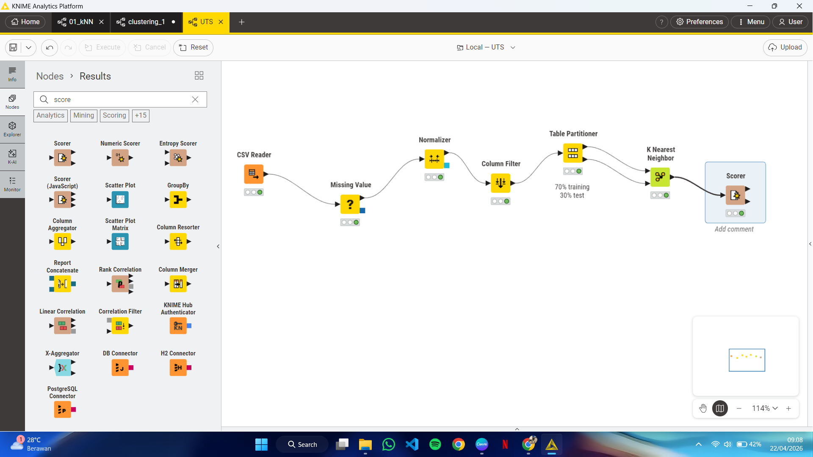
1. Metode#
Metode yang digunakan adalah K-Nearest Neighbors (KNN) untuk klasifikasi tanah menjadi dua kelas: Subur dan Tidak Subur.
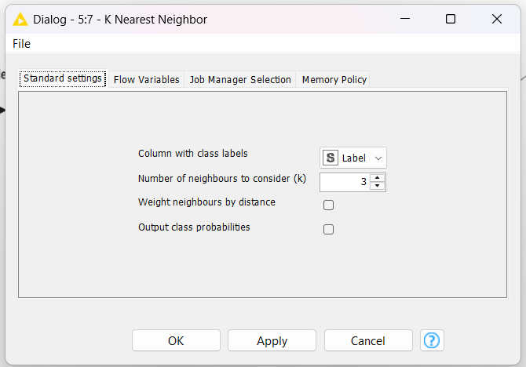
KNN bekerja dengan:Menghitung jarak antar data (Euclidean Distance)
Mengambil k tetangga terdekat (k = 3)
Menentukan kelas berdasarkan mayoritas tetangga
2. Pemrosesan Data#
Tahapan preprocessing:
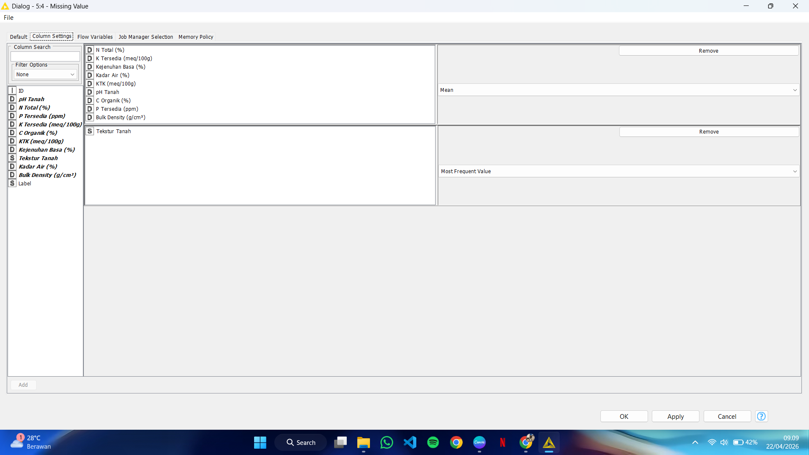
Handling Missing Value
Data yang hilang diisi menggunakan:Mean (untuk numerik)
Most frequent (untuk kategorikal)
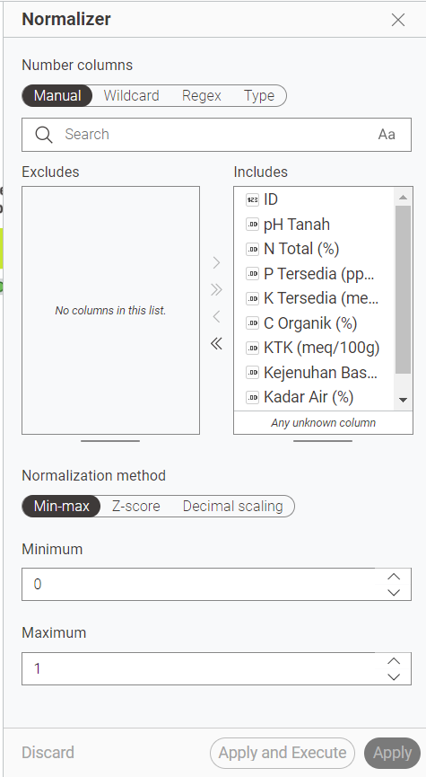
Normalisasi Data
Dilakukan untuk menyamakan skala antar fitur Dilakukan normalisasi menggunakan metode Min-Max Normalization Semua nilai berada pada rentang 0 – 1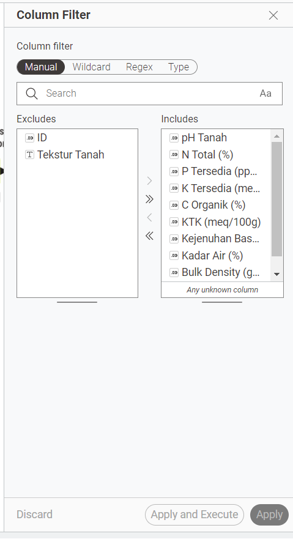
Seleksi Fitur (Column Filter)
Menggunakan fitur numerik
Menghapus ID dan fitur yang tidak relevan
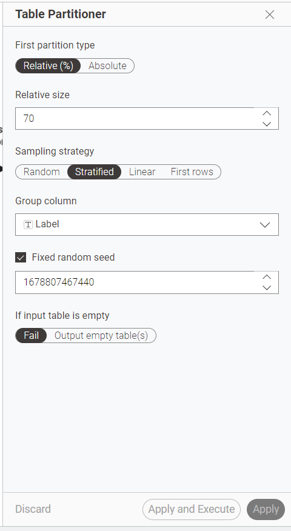
Split Data (Partitioning)
70% data training
30% data testing
Menggunakan stratified sampling
3. Dataset#
Dataset terdiri dari:
2000 data
10 fitur (9 numerik, 1 kategorikal)
1 label (Subur / Tidak Subur)
Distribusi kelas:
Subur: 1000 data (50%)
Tidak Subur: 1000 data (50%)
4. Hasil Evaluasi#
Confusion Matrix#
Pred: Tidak Subur |
Pred: Subur |
|
|---|---|---|
Actual Tidak Subur |
300 |
0 |
Actual Subur |
0 |
300 |
Metrik Evaluasi#
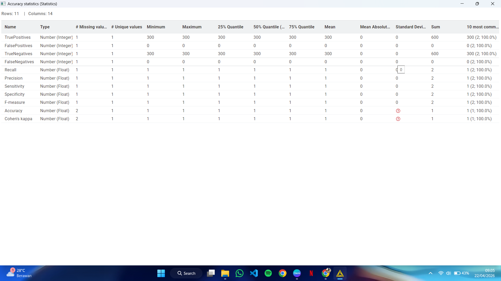
Accuracy = 100%
Precision = 100%
Recall = 100%
F1-Score = 100%
5. Analisis#
Model menghasilkan performa sempurna (100%) pada data uji, yang menunjukkan:
Pola data sangat jelas dan terpisah
Fitur mampu membedakan kelas dengan baik
6. Kesimpulan#
KNN berhasil mengklasifikasikan data dengan sangat baik
Model menunjukkan performa maksimal pada dataset ini